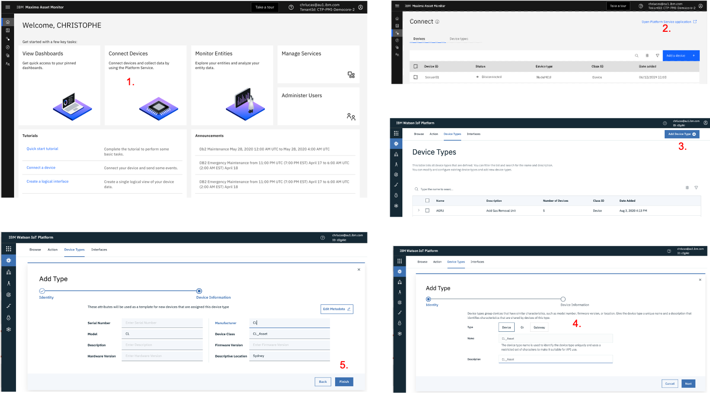

MONITOR Lab
0. Overview & Prerequisites
Welcome to the IBM Maximo Asset Performance Management (APM) labs.
These labs were conceived to:
- take you through
- again
This picture summarises the main elements of APM and how they are integrated.

1. Generate the data
In this Module you will:
- Create a Device Type and 3 Devices of that Type
- Generate IoT data for those 3 Devices using an IoT simulation
- Create Physical & Logical interfaces to send the IoT data to the Monitor data lake
- Visualise the IoT data in a Watson IoT Platform simple dashboard
Before you begin:
This Exercise requires that you have completed Exercise 1 Connected Devices
1. Create Device Type & 3 Devices
Let's first create a Device Type.
- From your Monitor Instance Home page, click
Connect Devices - On the opened Connect menu, click
Open Platform Service applicationin the top-right corner. This will launch the associated Watson IoT Platform in a separate browser tab. - Go to the Device Types menu, and click
Add Device Type. - Enter
XY_Assetin the Name and Description fields - whereXYare your initials. Note that for the rest of this lab, we will useCL_Asset(e.g. CL for Christophe Lucas). ClickNext. - On the next Metadata page, enter
CLin Model and Manufacturer fields, and enterCL_Assetin Device Class field. The reason why we want to enter values here is to later show how Dimensions can be used in Monitor to slide and dice the data. ClickFinish.
The below picture shows the 5 previous steps. 
Now, let's create 3 Devices of type CL_Asset.
- Stay in the Watson IoT Platform, go to the Browse menu and click
Add Device. - On the identity page, select your just created
CL_Assetas Entity Type and enterCL_Asset_1in Device ID. ClickNext. - On the Device Information page, accept the defaults, click
Next. - On the Security page, accept the defaults, click
Next. - On the Security page, accept the defaults, click
Next. - Click
Back, and repeat above steps 1 to 5 for 2 more Assets:CL_Asset_2andCL_Asset_3. - Finally, go to the
Browsemenu, enterCL_Assetin the Search field, and you will now see your 3 Devices.
You have now created the required CL_Asset Device Type and the 3 CL_Asset_1, CL_Asset_2 and CL_Asset_3 Devices that we will use throughout the labs.
The below pictures shows the 7 previous steps.
2. Create IoT Simulation
Let's now send data to those 3 Devices !
Using the Watson IoT Platform IoT Simulation capabilities,
it is possible to simulate a device and its IoT readings - exactly as if this was a real IoT device really connected to the platform and sending real IoT readings.
We are going to use this great functionality as it allows one to literally simulate any asset (e.g. Pump, Engine, Truck, Conveyor Belt - you name it !), any IoT readings and do any demo.
For this Lab, we will simulate our 3 CL_Asset_1_2_3 Devices generating the following IoT readings: temperature, vibration, pressure, speed, acceleration, load, torque, starts . You can of course change the IoT reading names and/or their values to fit your demo needs.
- First of all, make sure that in your Watson IoT Platform, Settings menu, the
Activate Device Simulatoris ON. Once that is done, you will see a little box in bottom-right of your screen showing 0 Simulation. - Click on that
0 Simulationbottom-right box, and clickCreate Simulation. - In the
Select or create a device typebox, select theCL_Assetdevice type you earlier created. That will open a window as you can see kit in picture below - let's customize this. - In
Event type name, enter CLA. in theSchedulefield, enter4 Every Minute. In thePayload, copy-paste the following .json code. Make sure at this stage that theStore events in the data lakebox remains unchecked ! ClickSave. - Click
Use Registerd Device, enter CL_Asset in thePick Devicebox, select CL_Asset_1. Repeat for CL_Asset_2 and CL_Asset_3. - You should now start seeing Events flowing in the bottom Events box.
Note that the values in the random(35,40) functions can be considered being the 'standard operating conditions' for the given IoT reading.
Later on in the lab, we will change those value ranges for short periods of time (i.e. change the temperature ranges from random(35,40) to random(46,49)) and show how Monitor's out-of-the-box anomaly functions can automatically spot these 'anomalies' which are deviations from the 'standard operating conditions'.
{
"temperature": random(35,40),
"vibration": random(1,5),
"pressure": random(20,25),
"speed": random(15,20),
"acceleration": random(8,10),
"load": random(90,110),
"torque": random(12,14),
"starts": increment(1,1)
}
The below pictures shows the 6 previous steps.

Great, you now have your 3 CL_Asset_1_2_3 Devices generating IoT readings 4 times every minute.
Let's check those readings on a Dashboard.
3. Create Watson IoT Platform Dashboard
Let's create a Dashboard so we can see the simulated IoT readings for 1 of our devices: CL_Asset_1.
This Dashboard will allow us to clearly visualise the anomalies earlier mentioned.
- Still in the Watson IoT Platform, click on the Boards menu. Click
Create Board. Name the BoardCL_Asset IoT Readings Dashobard. ClickNextthenSubmit. Open the Board. - Let's first create a small card which displays the 8 IoT Readings we simulated, getting updated every 15 seconds. Click
Add New Card. SelectAll device propertiesthenCL_Asset_1, thenNextthenSubmit. - Let's now create a card which whos the flow of data. Click
Add New Card. ClickLine Chart, then selectCL_Asset_1. - Click
Connect data set. In the event field, selectCLA(that is the name of the IoT Simulation we created earlier), then in the Property selecttemperature. Repeat this for a couple more properties, e.g.vibrationandpressure. ClickNext, select theXLsize, clickNextthenSubmit. - Drag and drop the second card next to the first one. Play with the
5 minutesto24 hoursviews.
The below pictures summarise the previous steps and show what your Dashboard should like.

4. Create Physical & Logical Interfaces
So far, we have only generated simulated IoT data. What Monitor uses for all its visualisations and calculations is the data from the data lake. Monitor's data lake is being populated through the use of Physical & Logical interfaces. Let's create those interfaces and populate that data lake !
First let's create the Physical Interface.
- Still in the Watson IoT Platform, go to the Device Types menu, search then select CL_Asset, then click on the Interface menu.
- Click
Create Physical Interface. Leave the default name CL_Asset_PI, clickNext. - Click
Create event type. Wait 15 seconds or clickUse Last Event Cacheand you will see the CLA (which corresponds to the IoT Simulation we earlier created) event appear. - Click that event, click
Add. CickDone.
This picture shows the previous steps and where you should be by now.

Let's now create the Logical Interface.
- Click
Create Logical Interface. Leave the default name CL_Asset_LI, clickNext. - Click
Add Property,Selectthetemperature, clickSave. Repeat this for the 7 other IoT readings. - Make sure you tick the
Allow Additional PropertiesON, as that would allow you to add more readings in the future if you wish. - Click
Next, clickno event notificationsand change it toAll events. - Click
Apply, thenDone. - Click
Activatetwice.
This picture shows the previous steps and what your screen should finally look like after you created your Physical & Logical interfaces.
5. Take a break and let some magic happen ...
Brilliant ! You have created all that is needed to start monitoring your own IoT data. In the next module, we will check that your data lake is now populated. But first take a break (count 15 minutes at least, but I recommend several hours as all the following reports will show more data), because:
- some background job needs to run to populate your data lake with your IoT data, via the logical interface you just created.
- it is good for the IoT Simulation to keep running a bit, so the visualisations that we will build in next module will show data for more than just 1 hour. Also, for Anomaly functions to detect anomalies, 'normal conditions' must first occur
2. Monitor the data
1. Check your IoT data made it to the Monitor data lake
- Back to the Monitor interface, click
Monitor Entities. If you see 3 inNumber of Entities, it means that your data did make it to the dat lake. Let's have a look around. - Click on
CL_Asset. Then click onCL_Asset_1, then on itsMetricstab. Play with the 'slider' on e.g.acceleration- you can see your data now. - Go back to the
CL_Assetmain page, and click theDatatab. See all your (raw) IoT Metrics & Dimensions. Note that at this stage it is normal to see only a couple points on the graph as we have only been generating data for so long ! Play with the top 'slider' here too.
If you see this, so far so good !
2. Create an Hourly Summary Dashboard
- Back to the
CL_Assetmain page, clickNew Summary. - Enter
Hourlyas your Dashboard title, selectHourlyTime grain, click all Dimensions. ClickNext. - Click all
Dat Item, and for just 1 reading e.g.temperature, select allMethodsi.e.max,min,mean,stdetc. ClickConfigure Dashboard. - Click
Create. Note that it will take a couple minutes for your Hourly dashboard is ready, and you will note a Preparing icon during that time.
Once it is ready, your dashboard should look like this (with possibly less data points depending on how fast you have been to get here and for how long data has been sent).
Notice the hourly grain of the cards (vs. the shorter time grain that you just saw on the CL_Asset_1 Metrics tab).
On the left side in Summary Controls, notice the so-called Dimensions that correspond to the Metadata we associated to the CL_Asset Device Type and 3 Devices when we created them in the Watson IoT Platform.
Notice how you can change the 'time scope' of each card.
Finally, also notice how the temperature card displays the max, min, mean etc that we defined via the Methods and how you can click on 1 or several of these.

3. Explore the Data & create new Data Items
- Back to the
CL_Assetmain page, click on theDatatab. Observe that new Data Items have appeared, i.e. under theMetric (Calculated)section. Notice that for all the IoT Readings, a newreading_Hourly_meancalculated metric was created - this was automatically done when we crated the hourly dashboard in previous step. - In the filer just below Data Item, start writing temp. This filters the data items displayed.
Note that for the temperature reading, on top of the mean data item,
temperature_Hourly_min,temperature_Hourly_max,temperature_Hourly_stdetc were also created - that is because of the 8 Methods that we earlier selected for that data item when creating the dashboard.
4. Create some anomalous IoT Readings
5. [OPTIONAL] Understand Monitor's Anomaly Detection capabilities
Although this section is optional, I highly recommend it. This is a full Lab on itself, and plan 2 to 3 hours to complete it. You can access it here: Monitor Anomalies.
In this deep-dive lab, you will:
- view 3 great short Youtube movies explaining all the ins and outs of anomaly detection
- cdcd